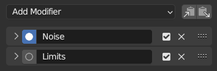
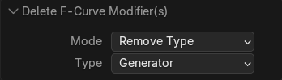
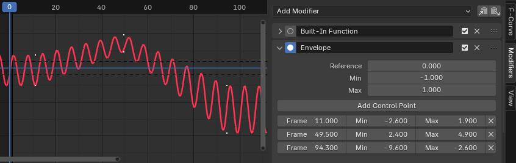

Modifier của F-Curve¶
Tham khảo
- Panel:
Modifier của F-Curve tương tự như modifier của object, ở chỗ chúng thêm các hiệu ứng không phá hủy, có thể được điều chỉnh bất cứ lúc nào và xếp chồng lên nhau để tạo hiệu ứng phức tạp hơn.
Các modifier được đánh giá từ trên xuống dưới. Bạn có thể thay đổi thứ tự của chúng bằng cách kéo các chấm ở góc trên bên phải.
Một số modifier yêu cầu phải đứng đầu và không thể dùng chung với nhau. Hiện nay điều này áp dụng cho các modifier Cycles và Smooth (Gaussian).
Interface¶
- Name
Theo mặc định, modifier được đặt tên theo chức năng của nó, nhưng có thể thay đổi được.
- Mute
Nhấp vào hộp kiểm trên thanh tiêu đề của modifier để tắt nó.
- Delete
Nhấp vào dấu X trên thanh tiêu đề của modifier để xóa nó.
- Influence
Cho phép bạn blend giữa curve gốc và curve đã được chỉnh sửa.
- Restrict Frame Range
- Start/End
Frame mà hiệu ứng của modifier bắt đầu/kết thúc.
- Blend In/Out
Số frame (so với giá trị bắt đầu/kết thúc ở trên) cần để modifier mờ dần vào/ra.
Thêm một Modifier¶

Panel Modifiers.¶
Modifier F-Curve có thể được thêm theo nhiều cách: qua Channel Menu trong Graph Editor, qua menu ngữ cảnh của vùng channel (nhấp chuột phải trong vùng channel), ngoài ra còn có thể thêm và quản lý trong tab Modifiers của Sidebar.
Để thêm modifier, trước tiên hãy chọn một F-Curve (trong vùng channel hoặc bằng cách chọn một keyframe của nó), rồi chọn Add F-Curve Modifer từ một trong các menu hoặc nhấp vào danh sách thả xuống Add Modifier trong Sidebar. Sau đó bạn có thể chọn loại modifier sẽ thêm vào các F-Curve đang chọn.
Xóa Modifier F-Curve¶
Cũng như khi thêm, có nhiều cách để xóa modifier F-Curve. Từng modifier riêng lẻ có thể được xóa bằng cách nhấp vào biểu tượng X bên cạnh modifier trong Sidebar. Nhiều modifier có thể được xóa cùng lúc bằng toán tử Delete F-Curve Modifiers.
Toán tử này nằm trong Channel Menu hoặc menu ngữ cảnh của vùng Channel (nhấp chuột phải trong vùng channel). Sau khi chọn mục menu này, bạn có thể mở panel redo để điều chỉnh cài đặt nếu cần.

Redo Panel¶
- Mode
Cách dùng để xóa modifier F-Curve khỏi các curve đang chọn.
- Remove All:
Xóa toàn bộ modifier F-Curve khỏi các curve đang chọn (tùy chọn mặc định).
- Remove Type:
Chỉ xóa loại modifier cụ thể khỏi các curve đang chọn, để nguyên các modifier khác.
- Remove First:
Xóa modifier nằm trên cùng của stack trong mỗi curve đang chọn.
- Type
Chỉ định loại modifier cần xóa (tùy chọn này chỉ hiển thị khi Mode được đặt thành 'Remove Type').
Các loại Modifier¶
Generator Modifier¶
Tạo một hàm đa thức. Đây là những công thức toán học cơ bản biểu diễn đường thẳng, parabol và các curve phức tạp hơn, tùy vào giá trị được dùng.
Xem thêm
Trang Wikipedia để biết thêm thông tin về đa thức.
- Mode
Cách dùng để biểu diễn phương trình.
- Expanded Polynomial:
Phương trình dạng \(y = A + Bx^1 + Cx^2 + ... + Dx^n\).
- Factorized Polynomial:
Phương trình dạng \(y = (Ax + B)(Cx + D)\).
- Additive
Cộng đa thức vào curve thay vì thay thế curve.
- Order
Lũy thừa cao nhất của
xtrong đa thức này.- Constant
Các hằng số A, B, C... trong phương trình.
Built-in Function Modifier¶
Đây là các công thức bổ sung, mỗi công thức đều có cùng các tùy chọn để điều khiển hình dạng của nó. Hãy tham khảo tài liệu toán học để biết thông tin chi tiết hơn về từng hàm:
- Type
Hàm tích hợp sẵn sẽ dùng:
Normalized Sine: \(sin(x)/x\)
- Additive
Cộng hàm vào curve thay vì thay thế curve.
- Amplitude
Điều chỉnh hệ số thu phóng theo trục Y.
- Phase Multiplier
Điều chỉnh hệ số thu phóng theo trục X.
- Phase Offset
Điều chỉnh độ dịch chuyển theo trục X.
- Value Offset
Điều chỉnh độ dịch chuyển theo trục Y.
Envelope Modifier¶
Cho phép bạn định hình lại curve. Đầu tiên, bạn xác định một bao (envelope), gồm hai đường ngang tương ứng hơn kém với cận dưới và cận trên của curve. Sau đó, bạn thêm các điểm điều khiển, trong đó mỗi điểm có thể đẩy, nén và kéo giãn bao (và cả curve theo nó) tại một frame nhất định.

Modifier Envelope.¶
- Tham khảo
Giá trị mà bao được căn giữa quanh nó.
- Min/Max
Độ dịch chuyển từ giá trị tham chiếu đến cận dưới/cận trên ban đầu của bao.
- Add Control Point
Thêm một điểm điều khiển tại frame hiện tại.
- Point
- Frame
Frame của điểm điều khiển.
- Min/Max
Độ dịch chuyển từ giá trị tham chiếu đến cận dưới/cận trên đã điều chỉnh của bao tại frame này.
Cycles Modifier¶
Khiến curve lặp lại chính nó.
Ghi chú
Modifier Cycles phải là modifier đầu tiên trong danh sách.
Modifier này cần biết chính xác các keyframe nằm ở đâu, điều không thể khi các modifier khác được xử lý trước. Vì vậy modifier này không tương thích với Smooth (Gaussian) Modifier.
- Before/After Mode
- No Cycles
Không lặp curve trước/sau phần gốc.
- Repeat Motion
Lặp lại curve, giữ nguyên giá trị của mỗi bản sao.
- Repeat with Offset
Lặp lại curve, dịch chuyển từng bản sao theo phương dọc sao cho keyframe đầu tiên của nó khớp với keyframe cuối cùng của bản trước.
- Repeat Mirrored
Lặp lại curve, lật ngược từng bản sao xen kẽ theo phương ngang.
- Count
Số bản sao sẽ tạo. Giá trị 0 nghĩa là vô hạn.
Các curve tuần hoàn đơn giản¶
Khi Cycle Mode ở cả hai đầu được đặt thành Repeat Motion hoặc Repeat with Offset, và không tùy chọn nào khác của modifier bị thay đổi khỏi mặc định, modifier sẽ xác định một chu kỳ vô hạn đơn giản.
Trường hợp đặc biệt này nhận được một số hỗ trợ thêm từ các bộ phận khác của Blender:
Việc đặt handle Bézier tự động nhận biết chu kỳ và tự điều chỉnh để đạt được chuyển tiếp mượt mà.
Tùy chọn Cycle-Aware Keying có thể được bật để tính đến chu kỳ khi chèn keyframe mới.
Noise Modifier¶
Chỉnh sửa curve bằng một công thức nhiễu (noise). Điều này hữu ích để thêm độ ngẫu nhiên nhẹ nhàng hay cực mạnh vào các chuyển động đã animation, chẳng hạn rung camera.
- Blend Type
- Replace:
Cộng thêm nhiễu trong khoảng [-0.5, 0.5].
- Add:
Cộng thêm nhiễu trong khoảng [0, 1].
- Subtract:
Trừ đi nhiễu trong khoảng [0, 1].
- Multiply:
Nhân với nhiễu trong khoảng [0, 1].
- Scale
Thay đổi tỷ lệ ngang của nhiễu. Giá trị cao hơn tạo dao động thưa hơn.
- Strength
Thay đổi tỷ lệ dọc của nhiễu.
- Offset
Dịch chuyển nhiễu theo thời gian.
- Phase
Điều chỉnh seed ngẫu nhiên của nhiễu.
- Depth
Điều chỉnh mức chi tiết của hàm nhiễu.
- Lacunarity
Khoảng cách giữa các tần số liên tiếp. Depth phải lớn hơn 0 thì tham số này mới có tác dụng.
- Roughness
Lượng chi tiết tần số cao. Depth phải lớn hơn 0 thì tham số này mới có tác dụng.
Limits Modifier¶
Giới hạn curve trong các khoảng thời gian và giá trị cụ thể.
- Minimum, Maximum X
Xóa dữ liệu curve gốc ở bên trái frame nhỏ nhất và bên phải frame lớn nhất, thay thế bằng Constant extrapolation.
- Minimum, Maximum Y
Kẹp giá trị của curve, không bao giờ cho chúng xuống dưới mức tối thiểu hay vượt quá mức tối đa.
Stepped Interpolation Modifier¶
Tạo cho curve hình dạng bậc thang bằng cách lấy mẫu mỗi N frame và giữ nguyên giá trị sau mỗi lần lấy mẫu. Theo một nghĩa nào đó, điều này giảm frame rate của curve bằng cách cho phép giá trị thay đổi ít thường xuyên hơn, từ đó tạo ra chuyển động gập ghềnh.
- Step Size
Số frame giữ nguyên cho mỗi bậc.
- Offset
Số frame dùng để dịch chuyển các điểm lấy mẫu.
- Start Frame
Frame bắt đầu áp dụng hiệu ứng.
- End Frame
Frame kết thúc áp dụng hiệu ứng.
Smooth (Gaussian) Modifier¶
Dùng làm mượt Gaussian để giảm chi tiết và nhiễu trong curve. Nó thực hiện cùng thao tác làm mượt như toán tử Smoothing.
Modifier này dùng interpolation tuyến tính cho các subframe, điều có thể gây ra các vấn đề liên quan đến motion blur.
Lưu ý rằng đây có thể là một modifier tiêu tốn nhiều tài nguyên, và ảnh hưởng của nó đến hiệu năng có thể trở nên đáng kể khi được dùng trên nhiều F-Curve.
Ghi chú
Modifier Smooth (Gaussian) phải là modifier đầu tiên trong danh sách.
Modifier này cần biết chính xác các keyframe nằm ở đâu, điều không thể khi các modifier khác được xử lý trước. Vì vậy modifier này không tương thích với Cycles Modifier.
- Sigma
Hình dạng của phân bố Gaussian tính bằng frame. Giá trị thấp hơn sẽ tăng độ sắc, làm giảm hiệu ứng làm mượt. Giá trị lớn hơn sẽ làm mượt nhiều hơn, nhưng bị giới hạn bởi Filter Width (xem bên dưới).
- Filter Width
Số frame mà bộ lọc "nhìn thấy" quanh mỗi keyframe. Giá trị cao hơn cho phép làm mượt nhiều hơn (Sigma lớn khi đó có thể làm mượt trên nhiều frame hơn), nhưng sẽ làm giảm hiệu năng.